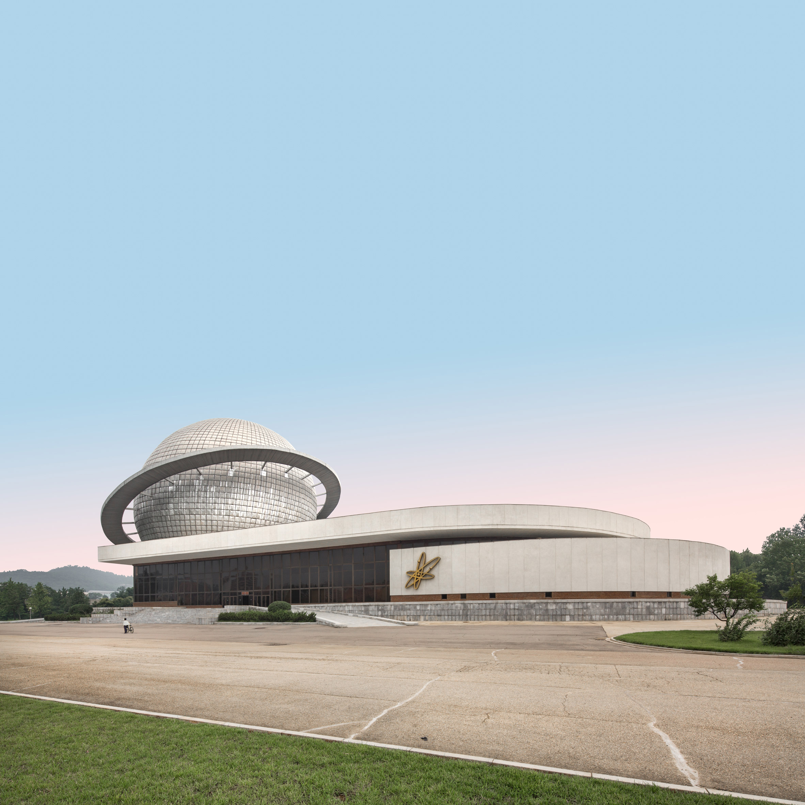
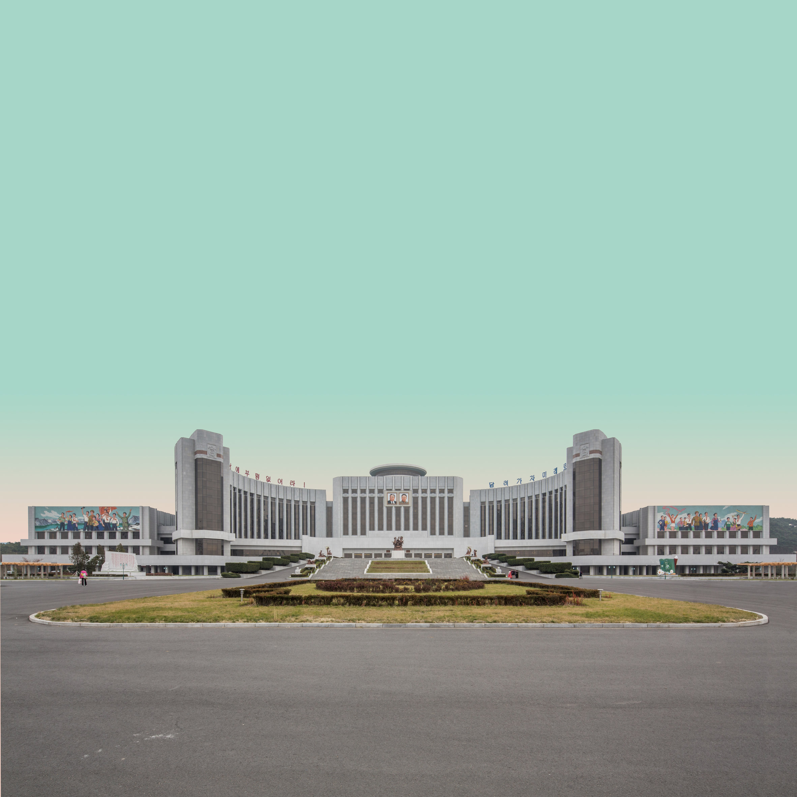
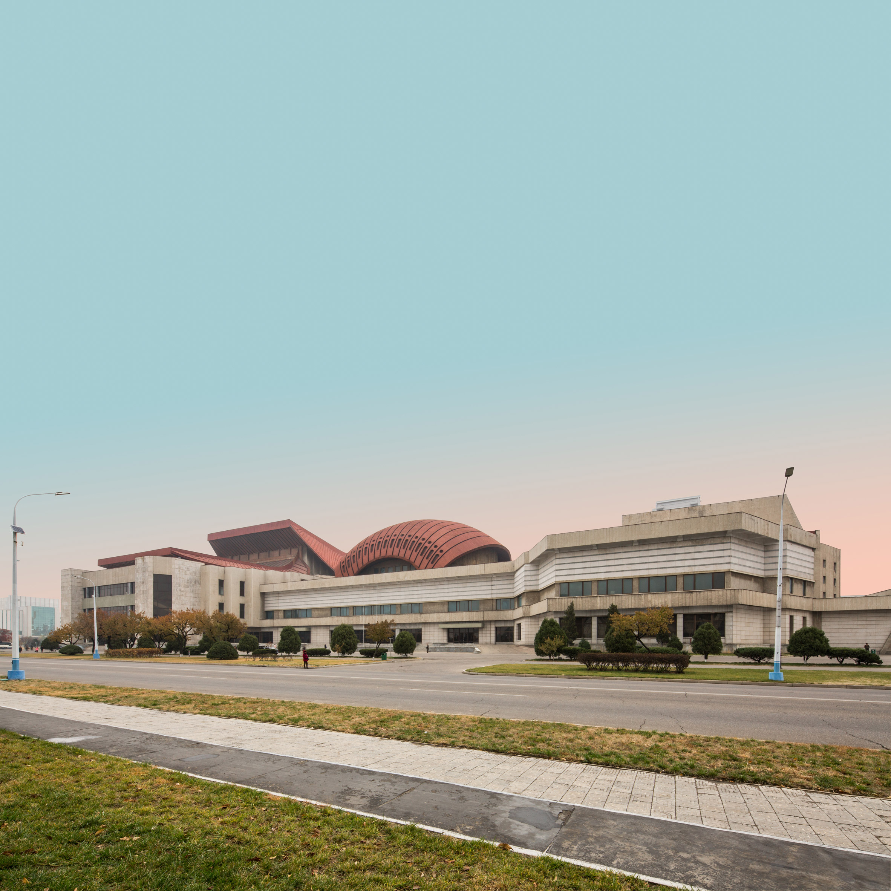
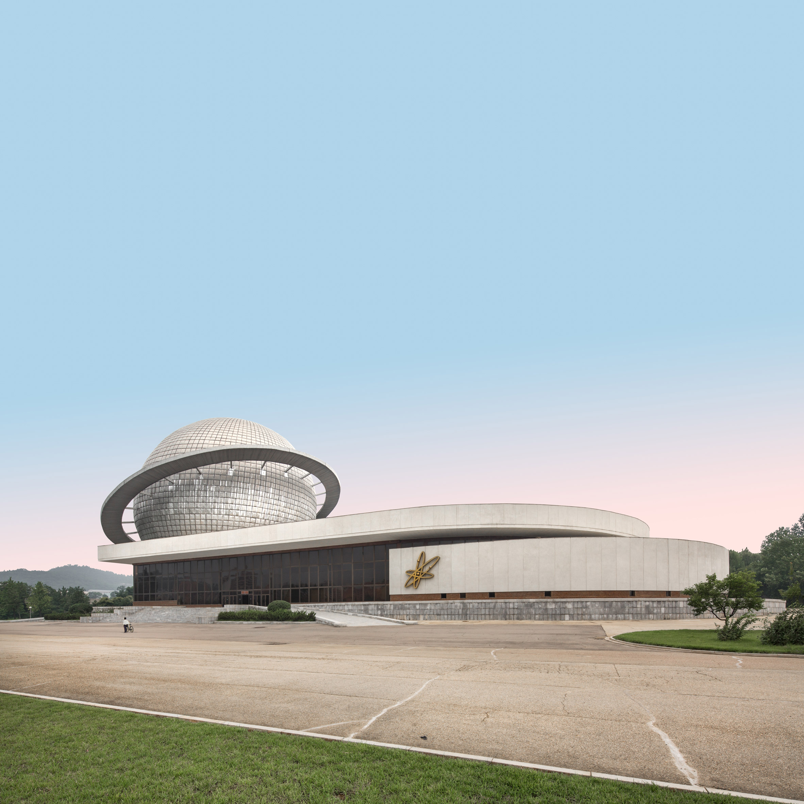
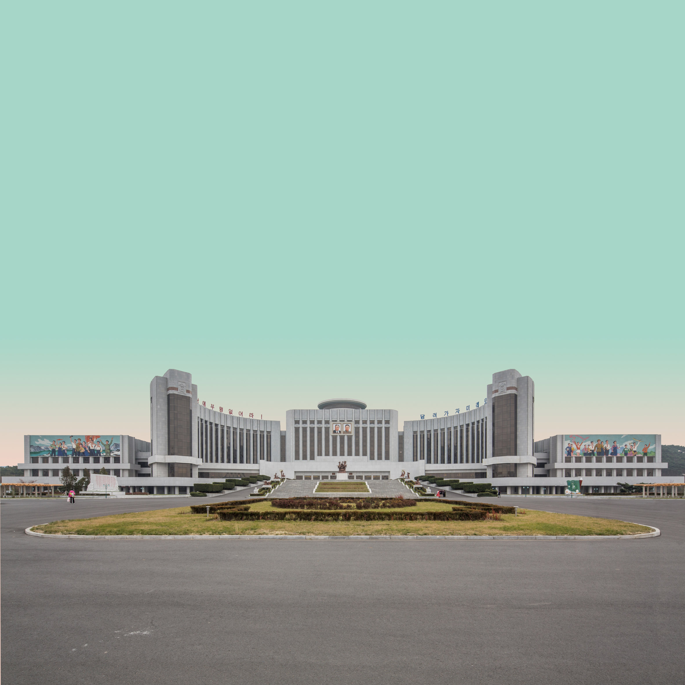
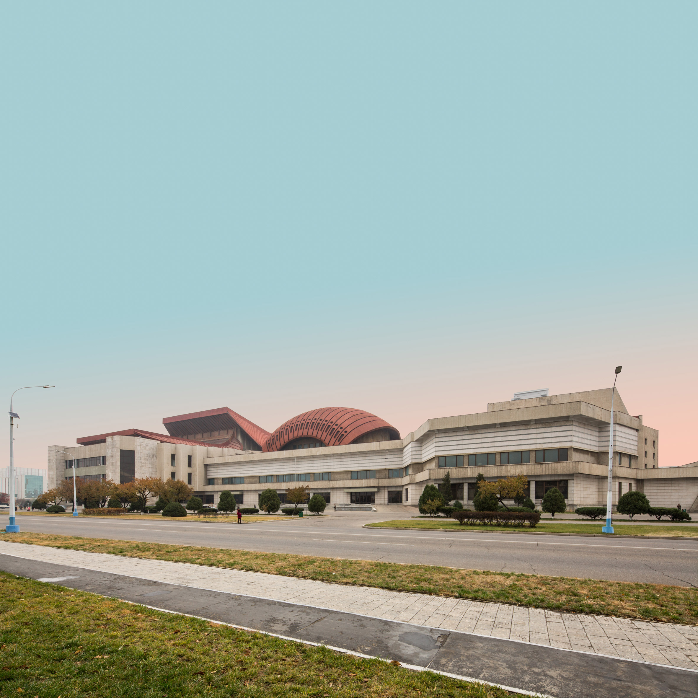
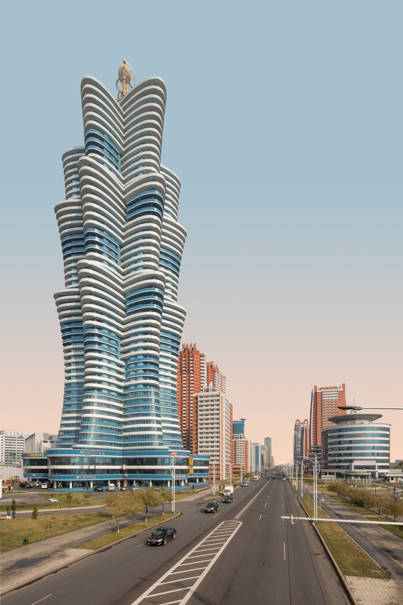
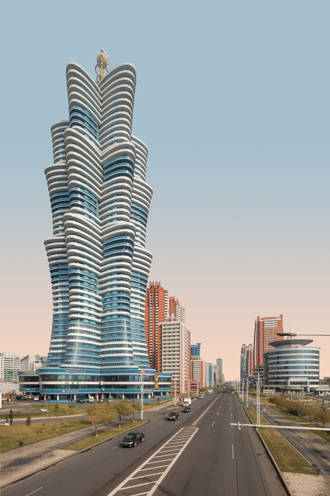
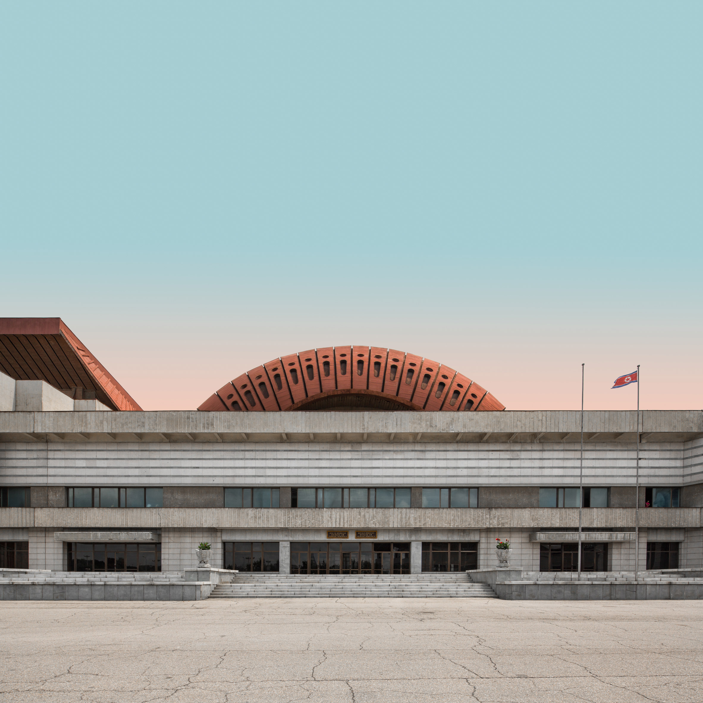
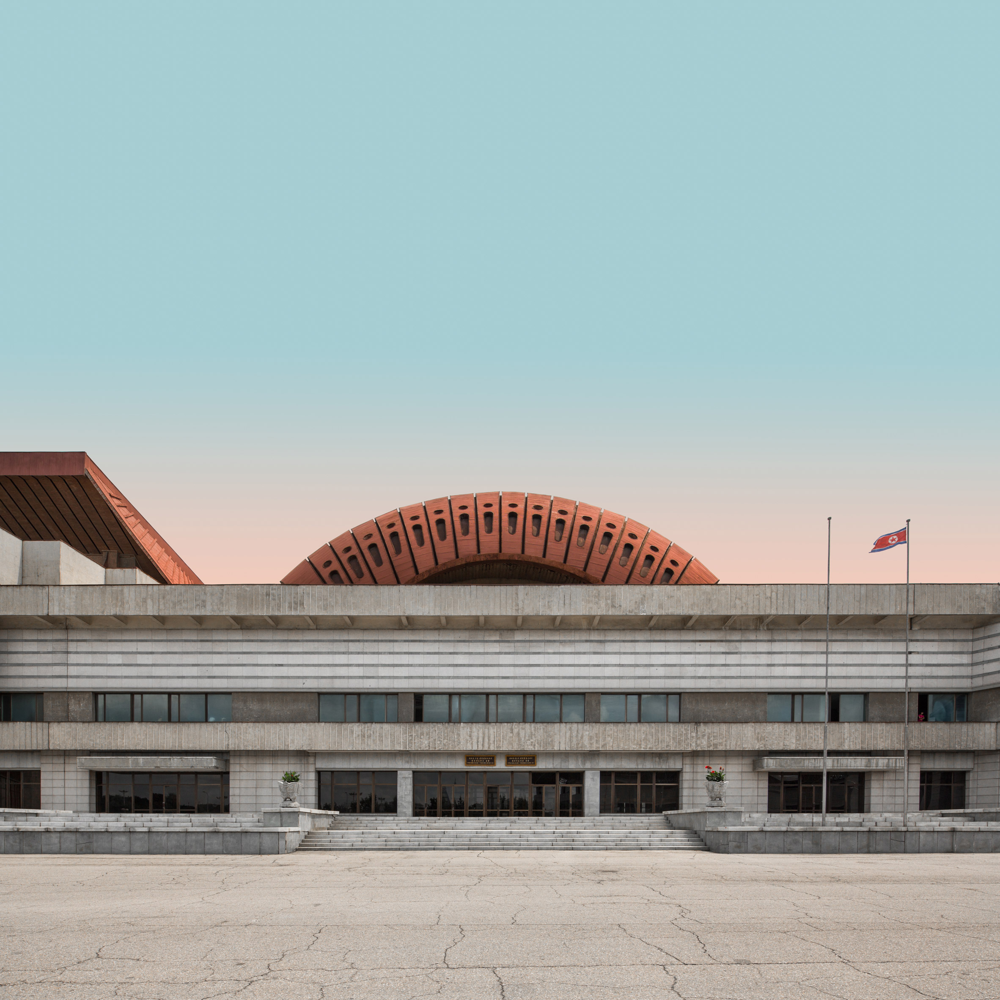

Lucy Tiven
Dec 5, 2019
If Pyongyang embodies the architect’s dream of a model city, its facades are also suggestive of a Potemkin village. In their new monograph “Model City Pyongyang,” architects Cristiano Bianchi and Kristina Drapic lead readers on a panoramic tour of the North Korean capital while borrowing the visual language of the country’s propaganda posters. In these photographs, the sky appears in dreamy pastel hues, thanks to photo editing, replicating the sense of “fictional reality” the authors say permeates their journeys through the city as foreign visitors.
For architects, part of Pyongyang’s appeal is its unique status as a city designed to express a single vision, North Korea’s “Juche” state ideology, which translates as “self-reliance” and draws from Marxism, Confucianism and Korean nationalism. The city’s design scheme is conceived as an ideological vessel, Bianchi and Drapic explain. Cityscapes demonstrate the spatialization of Juche in architectural principles of symmetry and scale enumerated in former leader Kim Jong Il’s treatise “On Architecture,” which is excerpted in the opening chapter of the book.
The book also focuses on aesthetic hallmarks of the Kim Jong Un era: escapist pastel hues, cylindrical residential towers and opulent leisure destinations that project a socialist utopia. Bianchi’s striking photographs document Pyongyang’s axial boulevards, city squares and candy-colored skyline, and Drapic’s drawings of city plans (which close the book) provide a rich aerial perspective of the cityscape that distinguishes the book from similar efforts that have come out of recent architectural tours of the city.
However, despite their professed interest in the formal conventions of propaganda posters, Bianchi and Drapic conspicuously fail to address the persuasive power of architecture itself. The book broadly declines to peer beneath Pyongyang’s aesthetic surfaces or interrogate how the visual culture of the “socialist fairyland” is wielded by the regime to exert social control. It goes unobserved that the source of the optical effect the authors replicate with editing software is, for instance, the severity of the local pollution. Coal smoke from power stations surrounding Pyongyang gives its sunsets a surrealistic color-gradient quality (albeit not strictly in the pastel pinks and teals used by Bianchi and Drapic).
Included among the four short essays that bookend the images is a contribution from the Guardian’s architecture editor, Oliver Wainwright. His 2018 photo collection, “Inside North Korea,” discusses many of the subjects of “Model City Pyongyang” but argues forcefully that the city’s pastel “kindergarten kitsch” cityscape functions as an anesthetic — a line of analysis Bianchi and Drapic appear to deliberately avoid.
To a certain extent, the co-authors position themselves as cultural interlocutors, writing euphemistically of the international sanctions against North Korea: “We remain convinced that isolation doesn’t benefit anyone, and that art and architecture can serve as an important means of cultural exchange, regardless of boundaries.”
“Model City Pyongyang” presents inarguably beautiful views of the skyline and deserted urban expanses, but readers would benefit from a more balanced critical posture — one that acknowledges the ethical dimension of engaging with aesthetic products of repressive societies.
 






 

 
